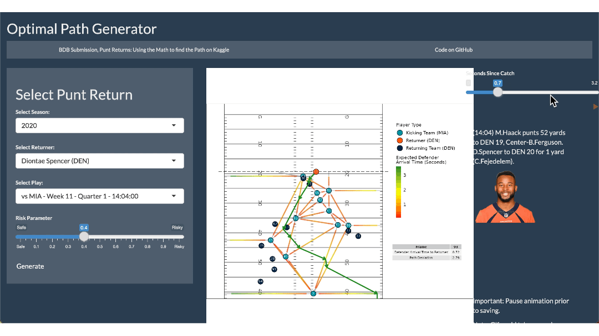

2022-10-13
In 2022, the Denver Broncos opted not to tender an offer to wide receiver Diontae Spencer and instead signed a new return man. The team is missing out. Among his 2020 peers, Diontae Spencer had the best decision-making ability to find and follow the optimal path to the end zone, according to an algorithm created by the 2022 NFL Big Data Bowl winners, Robyn Ritchie, Brendan Kumagai, Ryker Moreau, and Elijah Cavan.
For four years, the NFL Big Data Bowl has invited data scientists to explore statistical innovations in the NFL. Contestants work with Next Gen Stats alongside traditional football data to develop data-driven solutions to a specific challenge. By combining their data science acumen with sports knowledge, participants advance how football is played and coached.
The 2022 NFL Big Data Bowl called on contestants to devise new ways to analyze special teams in the NFL. The 2022 winners focused on quantifying the decision-making ability of the punt returner in each play by constructing an algorithm that determines their optimal path at any given frame. They used data science to answer questions like:
We’ve summarized tips from the 2022 NFL Big Data Bowl winners on how to get started with the NFL Big Data Bowl, detailed in this Tweet by Meetup organizer Rachael Dempsey. For each tip, we’ve highlighted resources from the team, as well as other leaders in the sports analytics space.
The first step in winning the Big Data Bowl is forming a team. While the competition allows individual submissions, the 2022 winners knew there is strength in numbers.
“A key aspect in building a team is having a good variety of backgrounds,” states Robyn. A statistician can understand models and the numbers behind them. A computer scientist can optimize code. The mixture of origin stories, skillsets, and departments brings different ideas to the table, enabling better analytics.
The 2022 winners recommend reaching out to others in sports analytics communities to find diverse collaborators. Brendan found his 2021 Big Data Cup teammates on Twitter. He messaged one analyst, who invited a stats person, who contacted someone with a hockey background. They combined their varied skills and won the competition.
Other communities include the SportsDataverse, a community of developers building easy-to-use sports analytics packages and open-source data repositories. Saiem Gilani, Director of Data Science and Engineering for the Houston Rockets, introduced the SportsDataverse in a past RStudio Sports Analytics Meetup:The 2022 winners repeatedly mention the importance of presenting data in visual and intuitive ways. Explaining a concept like “optimal path” could be complicated and confusing. Instead, the team used a mix of colors, text, spatial representations, and animation to represent their algorithm:
To create these plots, the team recommends packages like ggplot2 and gganimate. “Those packages are just super awesome for making very nice, aesthetically pleasing plots with very little effort,” states Brendan.
The team also created a Shiny app to make their work interactive. Users can explore different seasons, receivers, and plays. This allows for quick analysis without additional manual labor on the part of the creators.

If you are interested in the intersection of data and design, check out Tegan Bunsu Ashby’s Data Science Hangout below. As a Senior Software Developer for the Brooklyn Nets, Tegan talks about building applications and visualizations to empower front office decision-making and help win basketball games:Data science projects from other sports and competitions were a source of inspiration for the 2022 winners. For instance, you can pick up methodology from hockey and apply that knowledge to football.
Robyn specifically recommends getting comfortable with tracking data, the location-based coordinates of every player and the ball. If you are new to analyzing tracking data using R, Tom Bliss demonstrates how to get started using a previous NFL Big Data Bowl challenge:With such a broad challenge, how does a team narrow its focus? Start by playing around. “Get a general idea of how the data looks,” recommends Ryker. It might be unglamorous, but histograms and tables give you an idea of what’s possible. Once you find a promising topic, you can run with it (pun intended).
R users have many options for tackling exploratory data analysis. Priyanka Gagneja showcases several in an RStudio Enterprise Meetup:The team stated that their submission took a lot of trial and error, and the biggest roadblock was the time it took to run code on the giant datasets. Luckily, the purrr and furrr packages assisted in parallelizing the code. The team could iterate their analysis, even fixing an error they found a few days before the submission deadline.
The increasing volume, variety, and velocity of sports data are both great opportunities and challenges for data scientists working in sports. In a previous RStudio Sports Analytics Meetup, Alok Pattani demonstrates how to use R and Google’s BigQuery to scale analysis of NCAA basketball data:We thank the 2022 NFL Big Data Bowl winners for presenting at the RStudio Sports Analytics Meetup. Follow them on their social media:
Learn more about their winning NFL Big Data Bowl submission:
Are you interested in showcasing your data science skills to advance the sport of football? Sign up for the 2023 NFL Big Data Bowl. The challenge has just been released!